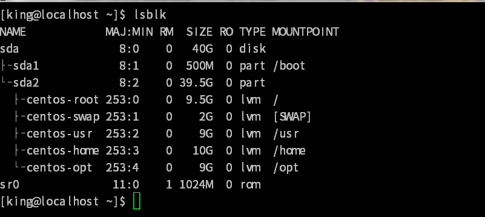
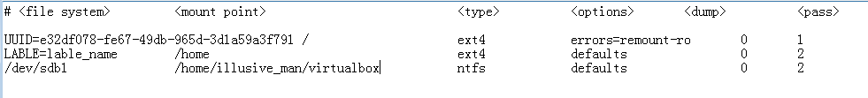

磁盤 與目錄 容量
//查看 檔案 所在掛節點 的使用量 //如果不接 檔案 將 顯示 所有掛節點使用量 df 檔案 -a 列出所有檔案系統 包括 /proc 等 -k 以kb為單位 顯示 -m 以mb為單位 -h 自動 使用 合適的 單位 -H 以1000換算 而非 1024 -T 顯示 filesystem名 (如 xfs ext4 ...) -i 不以容量 而以 inode 數量顯示 //顯示 檔案/目錄 使用磁盤量 du 檔案 -a 列出目錄下所有檔案 和 目錄 -h 自動 使用 合適的 單位 -s 僅列出目錄佔用總量 而不列出其下 檔案 目錄 信息 -S 列出目錄容量時 不包括子目錄 -k 以kb為單位 -m 以mb為單位
hard link 硬連結
hard link 是新增 一個 檔案名 使其 inode 連結到某個已存在的 inode hard link 不可 跨filesystem 不可用於 目錄 //創建 hard link ln src dist -s 創建 symbolic link -f 若目標檔案存在 刪除之 -i 若目標存在 詢問操作
symbolic link 軟連結
symbolic link 只是為檔案 創建一個 指向檔案的 別名 可以 跨filesystem 用於目錄
磁盤分割
//列出所有存儲裝置 lsblk -d 只列出磁盤 不列出其分割情況 -f 投訴列出 檔案系統名稱(uuid) -i 使用 ascii 輸出 -m 同時輸出 rwx 權限 所有者/組 -p 列出 路徑 完整名 -t 列出 詳細資料  NAME 裝置名稱 MAJ:MIN 其實核心認識的裝置都是透過這兩個代碼來熟悉的！分別是主要：次要裝置代碼！ RM 是否為可卸載裝置 (removable device)，如光碟、USB 磁碟等等 SIZE 容量 RO 是否為唯讀 TYPE disk(磁盤) partition(分割槽) rom(唯讀記憶體) MOUTPOINT 掛節點
分割工具
對於mbr的小 磁盤 使用 fdisk 分割 對於 gpt 分割的 大 磁盤 使用 gdisk 分割 fdisk gdisk 的用法 基本 一樣 //顯示 設備 sdb 分區情況(若不接受被名 顯示 全部) fdisk -l /dev/sdb //謹防 fdisk 為 sdb 分區 fdisk /dev/sdb 進入後的命令 m 顯示命令幫助信息 a b c d 刪除一個分區 l m n 增加一個分區 o p 顯示分區情況 q 撤銷所有操作 別離開fdisk s t u v w 將分區寫入磁盤 x
格式化分區
//將 /dev/sdb1 格式化為 ext4 mkfs -t ext4 /dev/sdb1 -t 設置使用的檔案系統 如ext2 ext3 ext4 (實際上mkfs -t ext4 會調用mkfs.ext4 使用 mkfs[table][table]可以知道支持的 檔案系統 mkfs 只能使用默認值 格式化 如需要自定義 使用mke2fs 指定自定義信息 ) // mke2fs -t ext4 /dev/sdb1 -b 設置block大小 支持1024 2048 4096 -i 設置每個inode佔用容量 -c 檢查磁盤錯誤 讀取測試 -c 檢查磁盤錯誤 寫入測試 -L 使用 卷標(label) 而非設備名 指定要格式化的 設備 -t 設置使用的檔案系統
磁盤掛接
//顯示 掛節點 mount //掛接 鏡像 mount -o loop ~/a.iso /mnt/testiso //掛接目錄 mount --bind /home /mnt/home //掛接 磁盤 mount /dev/sdb6 /mnt/test mount src dist -a 將 /etc/fstab 中未掛接到都掛接 -l 輸出 掛節點信息時 使用 lable -t 掛接設備的 檔案系統 (不設置則由 mount自動識別) -n 不要將掛接消息 寫入 /etc/mtab 中 -o 額外信息 ( ro 唯讀 rw 讀寫 async 異步 sync 同步 auto 運行 mount -a 自動掛接 noauto 不允許 suid 允許創建 suid/sgid 檔案 nosuid 不允許 ... exec 允許 ... 創建 可執行 檔案 noexec 不允許 ... user 是否允許讓任何人都可 mount nouser 不允許 defaults rw,suid,dev,exec,auto,nouser,async remount 重新掛接分區 ) //卸載掛接 umount dist -f 強制卸載 -l 立刻卸載 比 -f 更加 強制 -n 不更新 /etc/mtab -L 使用 lable指定 dist 而非 設備名
開機自動掛接
os啟動後 會 依據 /etc/fstab 的設置
進行 自動掛接

option mount -o 後的參數
dump 0(不備份) 1(每天備份) 2(不定期備份)
pass 0(不要檢查刪除) 1(使用fsck檢查) 2(同1不過比1完執行)
mount -o loop
mount -o loop 除了可以用來 掛接 iso鏡像外 還可以 將一個大文件 進行 掛接 從而將一個分區的 容量 感覺上 移動到其它分區上 //創建 大小 為 512M(bs*count) 的文件 file.iso dd if=/dev/zero of=file.iso bs=1M count=512 if 輸入檔案 /dev/zero 會一直輸出0 of 輸出檔案 bs 每個 block 大小 count block 數量
example
dd if=/dev/zero of=file.iso bs=1M count=512 sudo mkfs -t ext4 file.iso sudo mkdir /mnt/file sudo mount -o loop file.iso /mnt/file